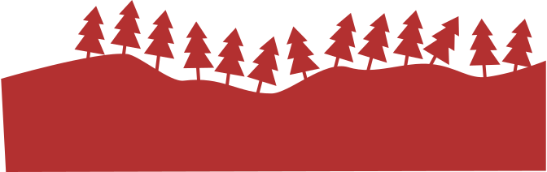
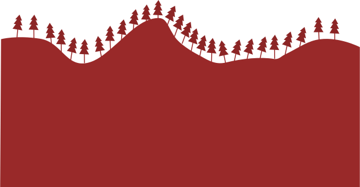
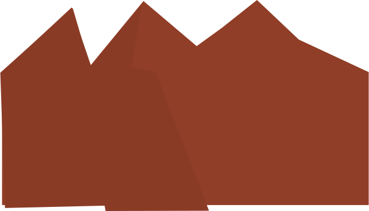

thethethethethethethethethethethethethethethethethethethethethethethethethethethethethethethethethethethethethethethethethethethethethethethethethethethethethethethethe thethethethethethethethethethethethethethethethethethethethethethethethethethethethethethethethethethethethethethethethethethethethethethethethethethethethethethethethe thethethethethethethethethethethethethethethethethethethethethethethethethethethethethethethethethethethethethethethethethethethethethethethethethethethethethethethethe thethethethethethethethethethethethethethethethethethethethethethethethethethethethethethethethethethethethethethethethethethethethethethethethethethethethethethethethe thethethethethethethethethethethethethethethethethethethethethethethethethethethethethethethethethethethethethethethethethethethethethethethethethethethethethethethethe thethethethethethethethethethethethethethethethethethethethethethethethethethethethethethethethethethethethethethethethethethethethethethethethethethethethethethethethe thethethethethethethethethethethethethethethethethethethethethethethethethethethethethethethethethethethethethethethethethethethethethethethethethethethethethethethethe thethethethethethethethethethethethethethethethethethethethethethethethethethethethethethethethethethethethethethethethethethethethethethethethethethethethethethethethe thethethethethethethethethethethethethethethethethethethethethethethethethethethethethethethethethethethethethethethethethethethethethethethethethethethethethethethethe thethethethethethethethethethethethethethethethethethethethethethethethethethethethethethethethethethethethethethethethethethethethethethethethethethethethethethethethe thethethethethethethethethethethethethethethethethethethethethethethethethethethethethethethethethethethethethethethethethethethethethethethethethethethethethethethethe thethethethethethethethethethethethethethethethethethethethethethethethethethethethethethethethethethethethethethethethethethethethethethethethethethethethethethethethe thethethethethethethethethethethethethethethethethethethethethethethethethethethethethethethethethethethethethethethethethethethethethethethethethethethethethethethethe thethethethethethethethethethethethethethethethethethethethethethethethethethethethethethethethethethethethethethethethethethethethethethethethethethethethethethethethe thethethethethethethethethethethethethethethethethethethethethethethethethethethethethethethethethethethethethethethethethethethethethethethethethethethethethethethethe thethethethethethethethethethethethethethethethethethethethethethethethethethethethethethethethethethethethethethethethethethethethethethethethethethethethethethethethe thethethethethethethethethethethethethethethethethethethethethethethethethethethethethethethethethethethethethethethethethethethethethethethethethethethethethethethethe thethethethethethethethethethethethethethethethethethethethethethethethethethethethethethethethethethethethethethethethethethethethethethethethethethethethethethethethe thethethethethethethethethethethethethethethethethethethethethethethethethethethethethethethethethethethethethethethethethethethethethethethethethethethethethethethethe thethethethethethethethethethethethethethethethethethethethethethethethethethethethethethethethethethethethethethethethethethethethethethethethethethethethethethethethe thethethethethethethethethethethethethethethethethethethethethethethethethethethethethethethethethethethethethethethethethethethethethethethethethethethethethethethethe thethethethethethethethethethethethethethethethethethethethethethethethethethethethethethethethethethethethethethethethethethethethethethethethethethethethethethethethe thethethethethethethethethethethethethethethethethethethethethethethethethethethethethethethethethethethethethethethethethethethethethethethethethethethethethethethethe thethethethethethethethethethethethethethethethethethethethethethethethethethethethethethethethethethethethethethethethethethethethethethethethethethethethethethethethe thethethethethethethethethethethethethethethethethethethethethethethethethethethethethethethethethethethethethethethethethethethethethethethethethethethethethethethethe thethethethethethethethethethethethethethethethethethethethethethethethethethethethethethethethethethethethethethethethethethethethethethethethethethethethethethethethe thethethethethethethethethethethethethethethethethethethethethethethethethethethethethethethethethethethethethethethethethethethethethethethethethethethethethethethethe thethethethethethethethethethethethethethethethethethethethethethethethethethethethethethethethethethethethethethethethethethethethethethethethethethethethethethethethe thethethethethethethethethethethethethethethethethethethethethethethethethethethethethethethethethethethethethethethethethethethethethethethethethethethethethethethethe thethethethethethethethethethethethethethethethethethethethethethethethethethethethethethethethethethethethethethethethethethethethethethethethethethethethethethethethe thethethethethethethethethethethethethethethethethethethethethethethethethethethethethethethethethethethethethethethethethethethethethethethethethethethethethethethethe thethethethethethethethethethethethethethethethethethethethethethethethethethethethethethethethethethethethethethethethethethethethethethethethethethethethethethethethe thethethethethethethethethethethethethethethethethethethethethethethethethethethethethethethethethethethethethethethethethethethethethethethethethethethethethethethethe thethethethethethethethethethethethethethethethethethethethethethethethethethethethethethethethethethethethethethethethethethethethethethethethethethethethethethethethe thethethethethethethethethethethethethethethethethethethethethethethethethethethethethethethethethethethethethethethethethethethethethethethethethethethethethethethethe thethethethethethethethethethethethethethethethethethethethethethethethethethethethethethethethethethethethethethethethethethethethethethethethethethethethethethethethe thethethethethethethethethethethethethethethethethethethethethethethethethethethethethethethethethethethethethethethethethethethethethethethethethethethethethethethethe thethethethethethethethethethethethethethethethethethethethethethethethethethethethethethethethethethethethethethethethethethethethethethethethethethethethethethethethe thethethethethethethethethethethethethethethethethethethethethethethethethethethethethethethethethethethethethethethethethethethethethethethethethethethethethethethethe thethethethethethethethethethethethethethethethethethethethethethethethethethethethethethethethethethethethethethethethethethethethethethethethethethethethethethethethe thethethethethethethethethethethethethethethethethethethethethethethethethethethethethethethethethethethethethethethethethethethethethethethethethethethethethethethethe thethethethethethethethethethethethethethethethethethethethethethethethethethethethethethethethethethethethethethethethethethethethethethethethethethethethethethethethe